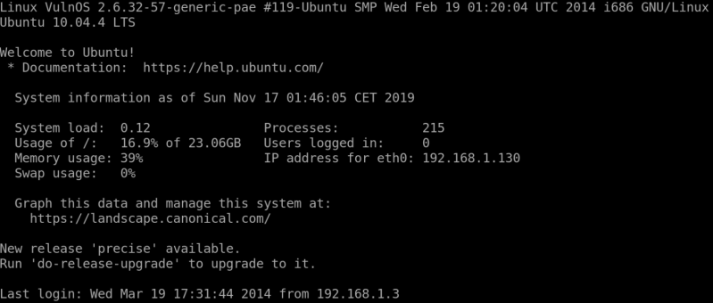
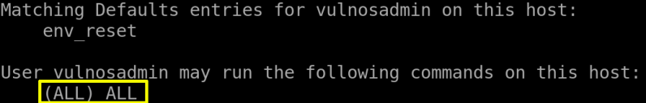

6. Login via ssh
We're going to use the credentials info we gathered using the etc/passwd and ldap.secret.
User: vulnosadmin
Password: canuhackme
$
ssh
vulnosadmin@192.168.1.130
Output:

Type the sudo -l command to determine which commands were allowed using sudo.
$
sudo
-l
Output:

We observed that vulnosadmin has no restrictions set and has the privilege to run ALL commands with sudo.
Index